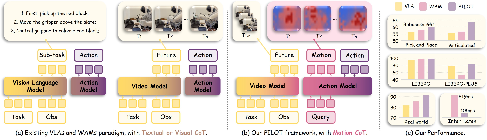

PILOT
Decoupling Intention from Trajectory:
A Representational Deduction Framework for World Action Models
1Nanjing University 2HKUST 3CNHK-SZ 4SIGS, Tsinghua University 5Joy Future Academy, JD
*Co-corresponding authors | Work led by Xiangkai Ma during internship at Joy Future Academy, JD, Shenzhen

Real-Robot Demonstrations (Third-Person View)
Standard
Pen (Persp. 1)
Pen (Persp. 2)
Eraser (Persp. 1)
Eraser (Persp. 2)
Charger (Persp. 1)
Charger (Persp. 2)
Corr. Fluid (Persp. 1)
Corr. Fluid (Persp. 2)
Book (Persp. 1)
Book (Persp. 2)
Stapler (Persp. 1)
Trash (Persp. 2)
Flash + Cam. Offset
Corr. Fluid (Flash)
Book (Flash)
Stapler (Flash)
Trash (Flash)
Desk Change
Book (Desk)
Charger (Desk)
Eraser (Desk)
Trash (Desk)
Third-person view of PILOT on the Agibot-G1 humanoid robot. Standard: 6 objects across 2 camera perspectives. Flash+Cam.Offset: strobe-light background with camera angle offset. Desk: replaced table surface.
97.9%LIBERO
62.6%RoboCasa-GR1
83.1%Real-World
90%Latency ↓